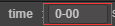
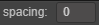
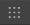
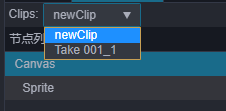
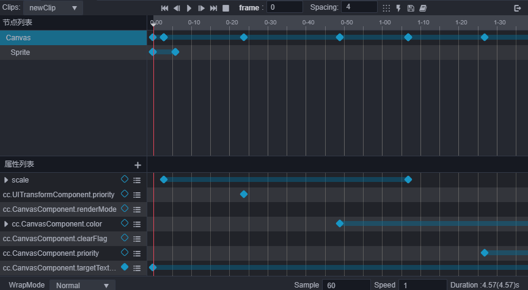
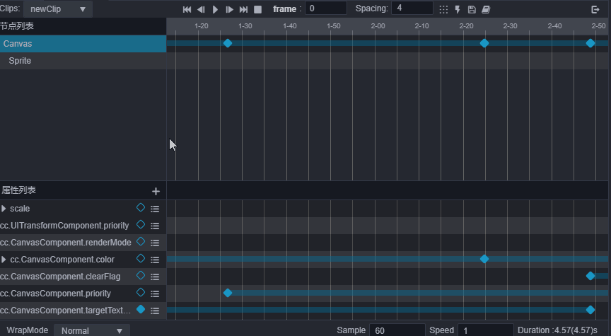

Animation Editor
Introduction to the main panel of the editor
The Animation Editor can be divided into 6 main parts.

- Toolbar
- Timeline and Events
- Node List
- Keyframe preview in node
- Property List
- Property track keyframe preview
Toolbar
The Toolbar is responsible for displaying some commonly used functions that are triggered by buttons.
| Function | Icon | Shortcut Key | Remarks |
|---|---|---|---|
| Move to the first frame |  |
Ctrl/Cmd + Left | n/a |
| *Move to previous frame |  |
Left | n/a |
| Play/Pause | Ctrl/Cmd + P | n/a | |
| Move to next frame | Right | n/a | |
| Move to the last frame | Ctrl/Cmd + Right | Move to the last frame in the effective range | |
| Stop animation | Ctrl/Cmd + S | Click to stop the current animation, it will move to the first frame after stopping | |
| Add event keyframe | - | Clicking will add an event keyframe at the current time control line position | |
| Exit animation editing mode |  |
Ctrl + Q | Click to exit animation editing mode |
| Switch the scale of time axis display |  |
- | The default is 00-00 mode, click to switch toframe (in keyframe number) display mode. For details about the time axis scale, please refer to the Time axis scale unit representation documentation. |
| Display the current time and jump to the corresponding time |  | - | The specific time of the current time control line is displayed. You can also manually enter it to adjust the current time control line to the corresponding time. You can directly input the frame of frame or00-00. |
| Adjust the default keyframe interval |  | - | The number of keyframe intervals filled in will be taken as the number of intervals when multiple keyframes are generated at the same time (for example: when creating a frame animation and dragging multiple pictures at once, the interval between the multiple keyframes added at this time will be taken as value) |
| Arrange selected keyframes |  | - | The selected keyframes will be arranged based on the first frame and the values in the input box as intervals. |
Timeline and Events
The timeline, along with the added custom event frames will mainly be displayed here. Right-clicking will move the event control to the corresponding position. The right-click menu can be used to add/remove, or copy/paste keyframes of the event. The effective length of the animation will also have a corresponding display effect.
Timeline scale representation
The default notation for ticks on the time axis is 01-05. The value consists of two parts. The preceding number indicates the current second, and the following number indicates the number of frames in the current second.
01-05 means that the scale is located on the time axis at the time that 1 second and 5 frames have passed since the start of the animation.
Because the frame rate (sample) can be adjusted at any time, the time indicated by the same scale will also vary with the frame rate.
- When the frame rate is 30,
01-05means 1 + 5/30 = 1.1667 seconds after the animation starts. - When the frame rate is 10,
01-05means 1 + 5/10 = 1.5 seconds after the animation starts.
Although the time indicated by the current scale will change with the frame rate, once a keyframe is added at a position, the total number of frames where the keyframe is located will not change. If we change the frame rate to 01-05 when the frame rate is 30. A keyframe has been added to the scale, and this keyframe is located at the 35th frame after the animation starts. Then change the frame rate to 10, the keyframe is still at the 35th frame after the animation starts, and the scale reading of the keyframe position at this time is 03-05. After conversion to time, it is exactly 3 times as before.
Click the button You can change the scale to frame and toggle back and forth.

Key frame events
Right-click on the timeline position or click the timeline button to add event key frames. Click the event __key frame mail menu to align for removal, copy and other operations. At the same time, after selection, it also supports a series of copy and paste, delete shortcut keys.
Node list
The index node in the animation data is based on the relative path of the node where the Animation component is attached. Therefore, a node with the same name under the same parent node can only generate one copy of animation data, and can only be applied to the first node with the same name.
The nodes here and the nodes of the Hierarchy Manager are mapped one by one. Using this relationship, when the number of nodes in the node list is too large to be consulted, you can use the search function of the Hierarchy Manager to locate the nodes. Click on the node in the Hierarchy Manager, and it will also jump to the corresponding node position in the Animation Editor to achieve a reasonable display effect.
Selected node icon

Since the node list of the Animation Editor is merged with the data in the clip. There may be more node information than the original node, but this part of the extra nodes is the lost node, which cannot be edited and used. The interface, which will be displayed as yellow is also grayed out at the key frame track. At this time, you can transfer the lost node to other nodes through the migration data in the right-click menu.
Keyframe preview within the node
This is mainly to display a preview of all frames on each node. Here, you can delete the key frame by right-clicking the key frame position menu, and you can also move the key frame position. Clicking the key frames of different nodes at the same time will select the corresponding node. Double-click the key frame to move the time control line to this position. Without the selected property, Ctrl/Cmd + Shift + Left/Right can Move the time control line up/down to the next key frame position.
Property list
Mainly displays the property list of the currently selected node participating in the animation. Each property display item has a key frame icon, corresponding to the current property track and the key frame status of the current time control line position. Click to add/remove the corresponding key frame . The right-click menu can remove the current track or clear data. Click on the plus button at the top to add an property track for the currently selected node.
Like the node, the property track may also be lost. The property recorded in the animation clip does not exist on the current node. This property is the property lost under the current node. The missing Properties are also displayed in yellow. In this case, you can add the relevant Properties to the corresponding node or directly remove the missing property track after exiting the editing mode.
Property track keyframe preview
It mainly displays the specific key frame settings on each property track, and is also the main area for key frame editing. You can right-click directly on the track to add key frames, or you can drag the time control line to the corresponding position and press enter to add. At the same time, it also supports frame selection and key frame selection to move, copy, paste and other operations in this area.
Basic Operation Guide
Switch between different animation clips for editing
Click the clip option in the lower left corner of the Animation Editor and select the clip to be edited:

Change the keyframe display area
Change the timeline zoom
What should I do if I feel that the range displayed by the animation editor is too small during operation, and it needs to be scaled down to allow more key frames to be displayed in the editor?
- You can zoom in or zoom out the display scale of the time axis by scrolling the mouse wheel in areas b, d, and f in the figure.
Navigate the display area
If you want to see the key frame on the right side of the Animation Editor that is hidden beyond the editor or the key frame on the left side, you need to move the display area:
Press the middle/right mouse button and drag in the areas b, d and f in the figure.

c. Drag to change the layout of the animation editor
The dividing line between the node list and the time, and the dividing line between the Property List and the time axis can be used to drag and change the layout, and can be freely adjusted to the layout effect suitable for editing by dragging.

Change the currently selected time
- You can change the current time node by clicking anywhere or dragging the time control line in the time axis (Figure B area) area.
- Drag and drop time control line.
- Click the button that controls the time control line in the toolbar.
- Double-click the key frame to jump the current time to the corresponding position.
- Use the shortcut keys to control the current time position s.
Play/pause animations
- Click the play button in the area of Figure A, the button will automatically change to pause, click again to play.
- In the playback state, operations such as saving the scene will terminate the playback.
- Shortcut key
Ctrl/Cmd + Pcontrol
For more information about keyframe operations, please review the Edit Animation Sequence documentation.
Shortcut key summary
| Function | Shortcut key | Description |
|---|---|---|
| Enter/exit animation editor | Ctrl/Cmd + E | - |
| Save animation data | Ctrl/Cmd + S | - |
| Move forward one frame | Left (←) | If it is already at frame 0, the current operation is ignored. When the key frame is not selected, the small red line moves, and after the node is selected, the key frame is moved; |
| Move one frame backward | Right (→) | When the key frame is not selected, the small red line is moved, and after the node is selected, the key frame is moved; |
| Move to the first frame | Ctrl/Cmd + Left (←) | - |
| Move to the last frame | Ctrl/Cmd + Left (←) | The number of effective frames in the current clip |
| Delete the currently selected keyframe | Delete/Cmd + Backspace | - |
| Play/Pause Animation | Alt + P | - |
| Stop animation | Alt + S | Current time will become 0 |
| Add key frame | I | After selecting the property track, the key frame will be added at the position of the time control line, if it is not selected, it will be ignored |
| Skip to the previous key frame | Ctrl/Cmd + Shift + Left (←) | Move to the nearest key frame to the left of the time control line (select the property track or select the node) |
| Skip to the next key frame | Ctrl/Cmd + Shift + Right (→) | Move to the nearest key frame on the right of the time control line (selected on the property track or selected node) |
| Select multiple keyframes | Ctrl | Hold down Ctrl and click on keyframes to select multiple keyframes |
| Select all keyframes of the track | Ctrl/Cmd + A | Select all keyframes of the selected property track |
| Copy to generate key frame | Alt | After selecting the key frame, press Alt and hold and drag the selected key frame to copy the corresponding key frame to the new moving position |
| Copy selected key frame | Ctrl/Cmd + C | - |
| Paste the key frame of the last copy | Ctrl/Cmd + V | - |
| Unselected key frame or event frame | Esc | - |